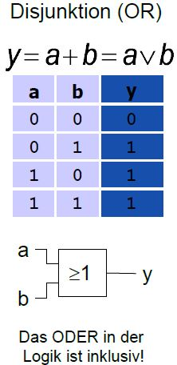

Themenauswahl > Schaltungssyntese
Schaltungssyntese
Inhalte
-
Schaltalgebra

-
Wahrheitstabelle
- eindeutig pro Schaltung
- Spalten: Eingabewerte, letzte Spalte: Ausgabe
- Zeilen: Eingabemöglichkeiten(umgerechnet aus Binäreingabe)
-
Darstellung in disjunktiver Normalform (DNF)
- ALle Zeilen mit 1 in Erebnisspalte
-
Minterm/Konjunktion für Zeile erzeugen: Alle Variablen(Varibale
bie 1,Negation der Variable bei 0) der Zeile mit ^/AND verknüpfen
- Disjunktion: Alle Minterme mit v/OR verknüpfen
-
Darstellung in Konjunktiver Normalform (KNF)
- ALle Zeilen mit 1 in Erebnisspalte
-
Maxterm/Disjunktion für Zeile erzeugen: Alle Variablen(Varibale
bie 1,Negation der Variable bei 0) der Zeile mit v/OR verknüpfen
- Konjunktion: Alle Maxterme mit ^/AND verknüpfen
-
Minimierung
- Wie in Mathe(Resolution)
-
KV-Diagramme
- Mintherme bilden
-
Mintherme in KV-Diagramm eintragen<(Jeweils 1 in Feld, was dem
Therm entspricht),Strich mit Variable steht für 1
-
Blöcke suchen
- Möglichst groß (Überschneidungen ok)
- Größe nur 2er-Potenzen
- Nur Symmetrische Formen(Quadrate, Rechtecke)
- Auch über Ränder hinweg
-
Ableiten von Thermen
- Pro Block ein Therm
- Alle Variablen, die von Block bedeckt werden
-
Wenn eine Varibale als Negation und in der normalen Form
existiert, dann fällt sie weg
- Disjunktion der Therme
-
Geht auch mit KNF, dann Maxtherme und 0en in KV Diagramm
betrachten und nachher Konjunktion
-
Wichtige Schaltungen
- Comparator
- Multiplexer/Demultiplexer
- Halbaddierer->Volladdierer/Carry-Ripple-Addierer
- ALU Anschauen
Zettel
- KNF/DNF
- KV Diagramme für 1-4 Variablen
- Gatter Arten